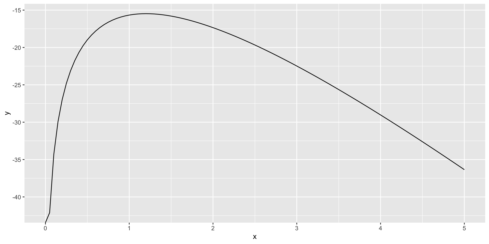
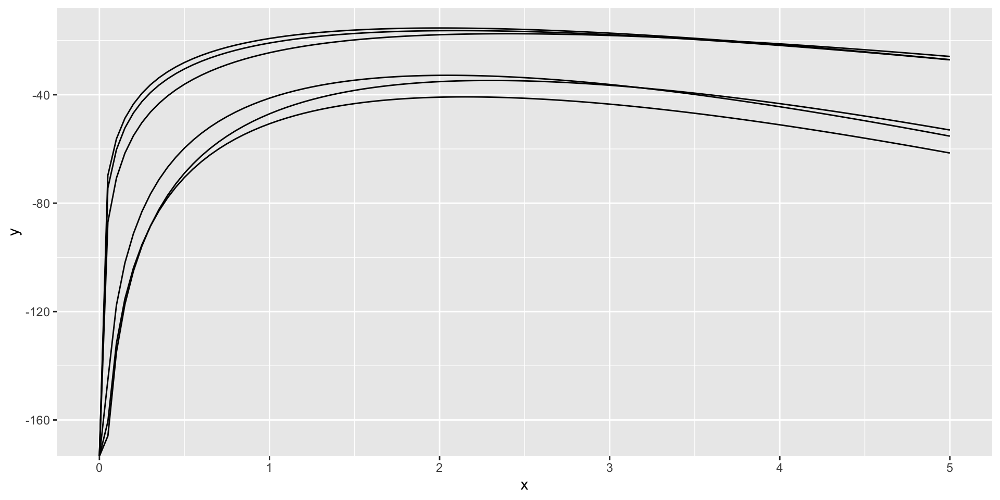
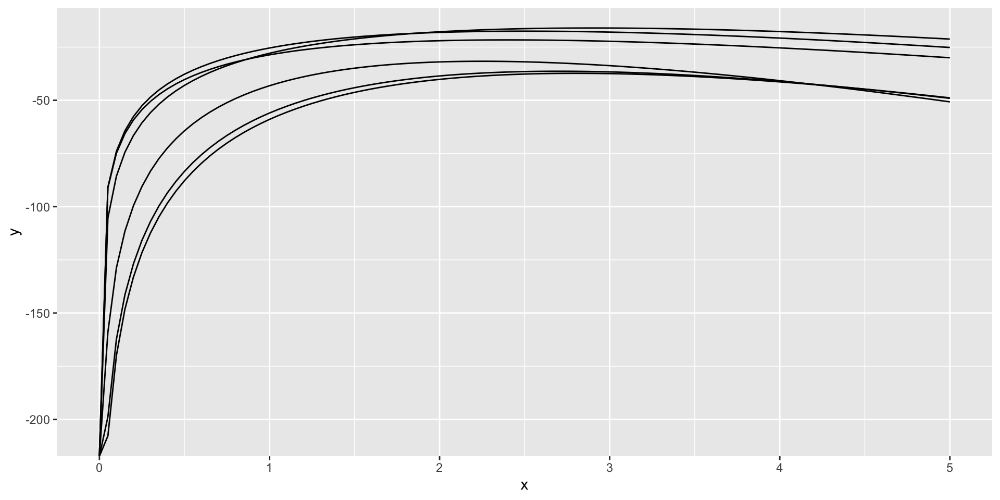
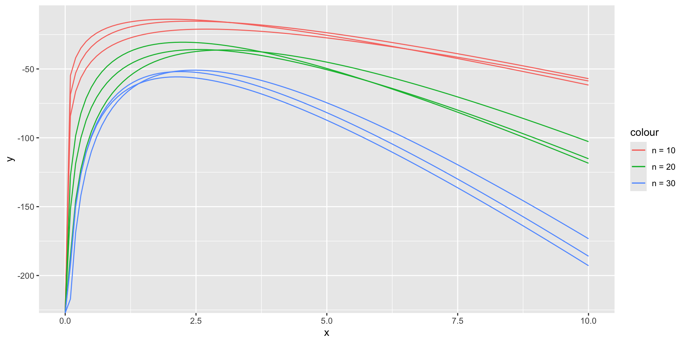
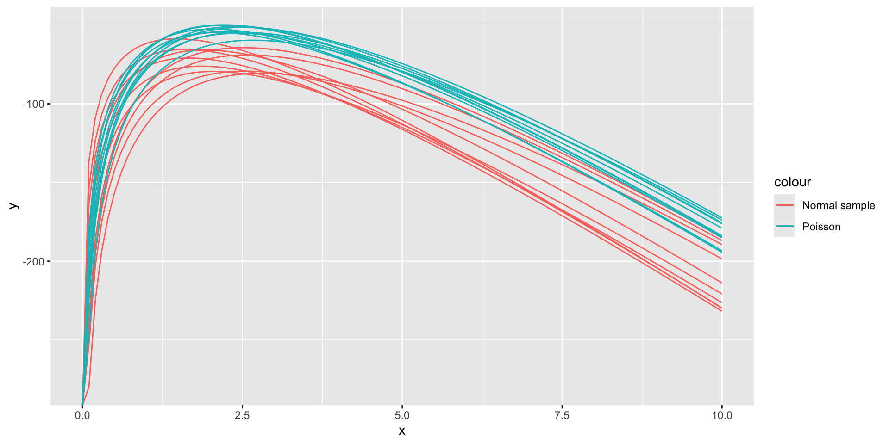

[1] 17Functionals
2026-01-27
Functionals
Functionals are functions that a function as input and return a (vector of) number(s) as output:
e.g. uniroot, integrate, …
another example: purrr::map applies a function on every element in a list

Your Turn
- Write a function(al)
apply_to(d,f)in R that applies the functionfto every variable of data setd.
Run the statement mtcars |> apply_to(class)
Create a statement that returns the number of missing values in each of the variables of
txhousing(in theggplot2package)How do your results differ from corresponding calls to
sapply?
Map and variants
mapapplies a function to every item in a listmap_XXXadditionally formats output asXXX: can bechr(character),dbl(numeric),lgl(logical), …walkdoes not have any output, i.e. operates through side effects (e.g. print message, create files, …)map2andpmaptake two/arbitrarily many lists as input
Why maps?
mapfunctions serve as iterators, i.e. replace (most) loopsmapworks within the tidyverse specs: apply either globally to each variable or withinmutateto each element in a (set of) variable(s)mapdoesn’t need to preserve the order in the variable, i.e. signal to processor that code could be run in parallel or distributed (e.g. good for large data)
Reduce functionals
reducetakes a functionfand a vectorxand applies the function repeatedly to its outputf(f(f( ... f(x))))reduceis conceptually a recursive approach
Function factories
a function that produces another function
often a shift in perspective (re-express as function of another parameter, e.g. likelihood vs density)
transformations (box-cox, scales in
ggplot2)
Example: Log likelihood of Poisson
Example: Log likelihood of Poisson
Better (because any terms in x are only evaluated once)
Using functions …

Sampling error in log-likelihood functions
ggplot() +
geom_function(fun = ll_poisson(rpois(10, lambda)), xlim = c(0, 5)) +
geom_function(fun = ll_poisson(rpois(10, lambda)), xlim = c(0, 5)) +
geom_function(fun = ll_poisson(rpois(10, lambda)), xlim = c(0, 5)) +
geom_function(fun = ll_poisson(rpois(20, lambda)), xlim = c(0, 5)) +
geom_function(fun = ll_poisson(rpois(20, lambda)), xlim = c(0, 5)) +
geom_function(fun = ll_poisson(rpois(20, lambda)), xlim = c(0, 5)) 
Your Turn
Re-write the previous expression with an approach that avoids the duplication of lines
Solution
No peeking!
Solution - mapping

Solution - Function Factory
geom_function_sample <- function(fun, sample, args) {
function(n, samples, ...) {
args = append(args, c("n"=n))
1:samples |> purrr::map(
.f = function(i) {
geom_function(fun = fun(do.call(sample, args=args)), ...)
})
}
}
add_function_layer <- geom_function_sample(
fun = ll_poisson, sample=rpois,
args = list(lambda=lambda))
